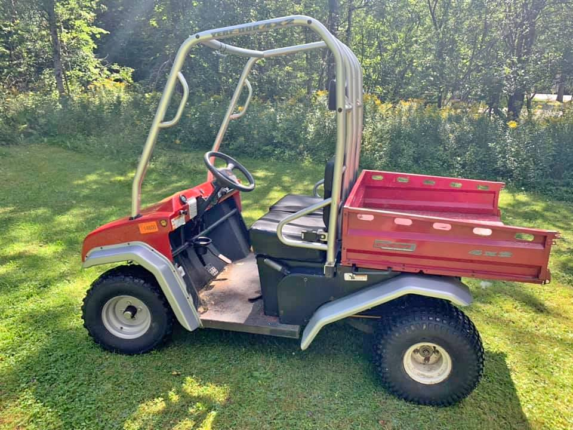
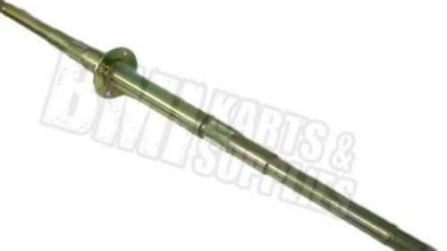
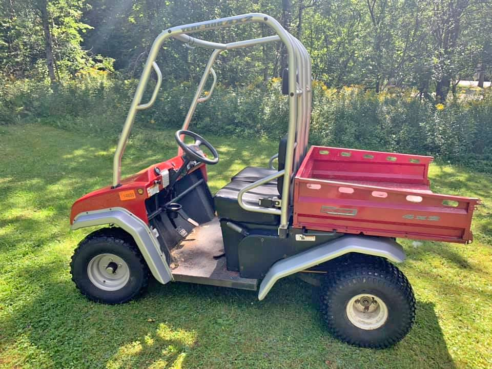
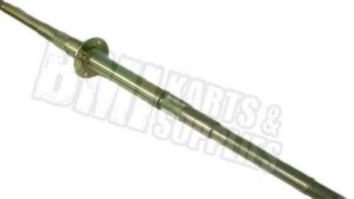

Wanted!
I have a 2003 Yerf-Dog Scout CUV (model # 34900)
I need a rear axle (Image source - BMI Karts).
If you have one, I'd love to talk to you!
email me, please!I have a 2003 Yerf-Dog Scout CUV (model # 34900)
I need a rear axle (Image source - BMI Karts).
If you have one, I'd love to talk to you!
email me, please!